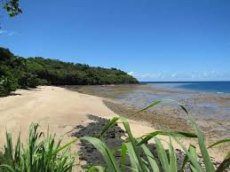
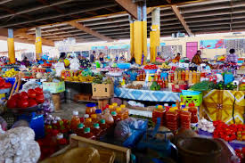
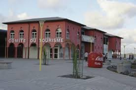
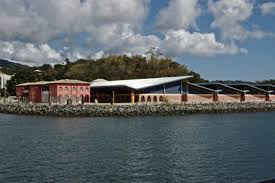

Mamoudzou
Mamoudzou, située sur l’île de Grande-Terre à Mayotte, est la préfecture et la plus grande ville de ce département d’outre-mer français. Cette ville dynamique joue un rôle central dans l’administration, l’économie et la culture de l’île. Son évolution rapide et ses infrastructures modernes en font un lieu de vie et de travail essentiel pour les habitants de Mayotte.
Histoire
Mamoudzou a une histoire riche et variée, marquée par des influences africaines, arabes et européennes. Originellement un village de pêcheurs, la ville a connu une transformation significative après le rattachement de Mayotte à la France en 1841. Le développement s’est accéléré au XXe siècle, surtout après que Mamoudzou est devenue la préfecture de Mayotte en 1977, remplaçant Dzaoudzi dans cette fonction.
Géographie
Mamoudzou s’étend sur la côte est de l’île de Grande-Terre, face à Petite-Terre, avec laquelle elle est reliée par des barges régulières. La ville bénéficie d’un climat tropical maritime, caractérisé par une saison chaude et humide de novembre à avril, et une saison sèche de mai à octobre.
Volcanisme et Topographie
La ville est située dans une zone sismique et volcanique. La topographie de Mamoudzou est variée, allant de zones côtières basses à des collines intérieures. Le mont Mtsapéré, un ancien volcan, est un point de repère important dans la région.
Démographie
Mamoudzou est la ville la plus peuplée de Mayotte, avec une population diverse composée d’habitants originaires de toutes les parties de l’île, ainsi que d’immigrants des Comores, de Madagascar et d’autres pays voisins. Cette diversité culturelle se reflète dans les nombreux festivals, marchés et événements sociaux de la ville.
Infrastructure
Mamoudzou est dotée d’infrastructures modernes, comprenant des routes bien entretenues, des hôpitaux, des écoles, des centres commerciaux et des installations sportives. La ville abrite le Centre Hospitalier de Mayotte, le plus grand établissement de santé de l’île, offrant une gamme complète de services médicaux.
Transport
La ville est bien desservie par les transports en commun, avec des services de bus réguliers reliant les différents quartiers de Mamoudzou et les autres communes de Grande-Terre. Les barges qui traversent le lagon vers Petite-Terre sont un élément crucial du réseau de transport, facilitant les déplacements quotidiens des habitants.
Économie
L’économie de Mamoudzou est diverse et en croissance. Elle repose principalement sur le commerce, les services, la pêche et le secteur public. Le marché central de Mamoudzou est un lieu animé où l’on peut trouver des produits frais, de l’artisanat local et des biens importés. La ville est également un centre administratif, abritant la plupart des bureaux gouvernementaux et des services publics de l’île.
Culture et Loisirs
Mamoudzou est un centre culturel dynamique. La ville accueille de nombreux événements tout au long de l’année, notamment des festivals de musique, des expositions d’art et des célébrations traditionnelles. Les espaces de loisirs, tels que les parcs, les plages et les terrains de sport, offrent de nombreuses possibilités de détente et de divertissement.
Sites et Attractions
Parmi les attractions notables de Mamoudzou, on trouve :
La Plage de Mtsanga Fanou : Une plage populaire pour la baignade et les pique-niques.

Plage de Mtsanga Fanou Description de l’image : Une magnifique plage de sable blanc bordée de palmiers, idéale pour les baignades et les pique-niques.
Le Marché Couvert : Un marché vibrant où l’on peut acheter des fruits de mer frais, des épices et des produits artisanaux.

Marché Couvert Description de l’image : Le marché couvert de Mamoudzou, rempli d’étals colorés proposant une variété de produits frais et d’artisanat local.
La Mosquée de Mamoudzou : Un lieu de culte important pour la communauté musulmane locale.
Mosquée de Mamoudzou Description de l’image : La mosquée de Mamoudzou, un édifice religieux imposant avec son architecture traditionnelle.
Comité du Tourisme de Mayotte : Le centre d’information touristique où les visiteurs peuvent obtenir des renseignements sur les attractions et les activités à Mamoudzou et dans toute l’île.
 
Description de l’image : Le bureau du Comité du Tourisme de Mayotte, un point de référence pour les informations touristiques et les guides.
Environnement
Mamoudzou et ses environs abritent une biodiversité riche. La préservation de l’environnement est une priorité pour les autorités locales et les habitants, avec des efforts continus pour protéger les mangroves, les récifs coralliens et les forêts tropicales. Des initiatives de développement durable sont en place pour assurer un équilibre entre croissance urbaine et conservation de la nature.
Conclusion
Mamoudzou est une ville dynamique et cosmopolite, au cœur de la vie sociale, économique et culturelle de Mayotte. Sa croissance rapide et son développement moderne, combinés à une riche diversité culturelle et à une attention portée à l’environnement, en font un lieu unique et attractif pour ses habitants et les visiteurs.